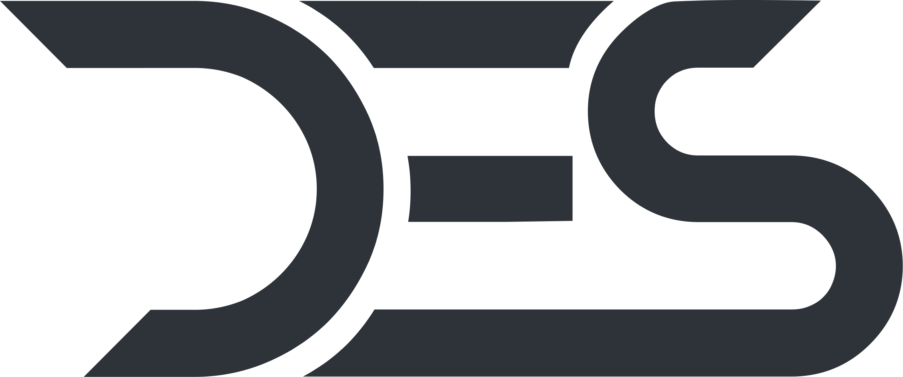

POR
División Automotriz
Concurso cerrado
Los ganadores
del pronóstico
Gran Premio Ambato · Última fecha · Circuitos 2026
?
El reto era uno solo
¿Cuánto
cronometró
Diego?
Adivinar su mejor tiempo en carrera.
Tres ganadores: los que más se acercaran.
Las reglas, al pie de la letra
Quién entra
y quién no
Comentarios en las dos publicacionesReel del 24 oct + arte Race Weekend
0
RepetidosLa misma persona, el mismo pronóstico
−2
Sin pronósticoMensajes de aliento, sin cifra
−2
Fuera de plazoDespués del cierre de clasificación · 24 oct, 09:00
−2
El tiempo real de Diego
Su mejor vuelta en carrera.
Nadie bajó de esa marca.
El recuento
Del más lejano al más cercano a 1:52.888
Podio del concurso
Los ganadores
Gracias por participar
Nos vemos
en la pista
Escribimos por mensaje directo a los tres ganadores
para coordinar la entrega de sus premios Motul.